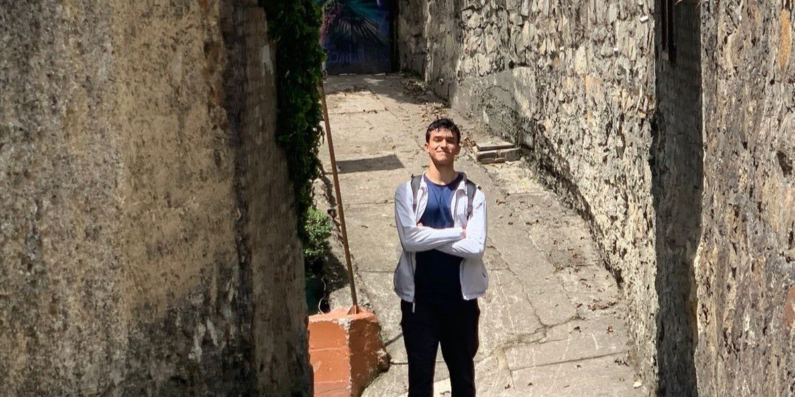
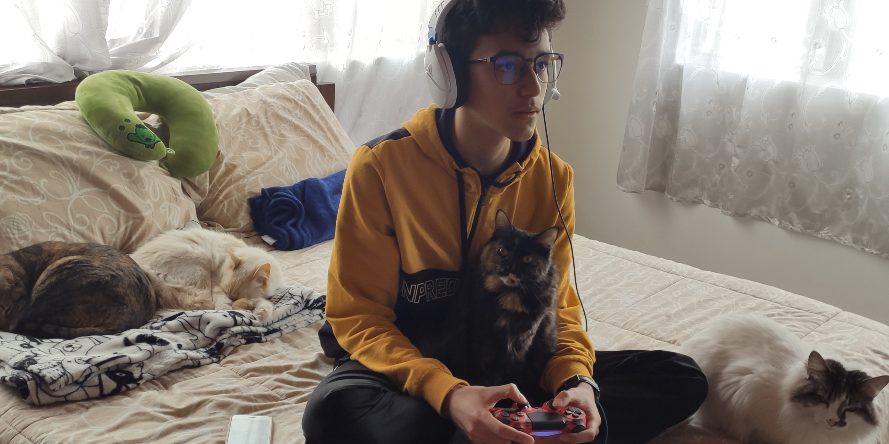

1 / 3

Monserrate, Bogotá
2 / 3

Simón Bolívar Park, Bogotá
3 / 3

Playing videogames with my cats
Hi, I'm Gabriel. I'm from Bogotá, Colombia and I'm 17 years old. I'm passionate about constantly pushing myself and learning new things. On the year 2021, I decided to leave school and since then I've been studying with different online resources on areas of my interest.
I'm constantly in the urge to do the things right and making the best out of every situation. I like to be methodical, organized and thoughtful about how I approach my daily life. Although my main area of studies has been computer science, I also enjoy investigating about themes like productivity, habits, and well-being factors like training and nutrition. In my free time I like watching anime, playing some great indie videogames or trying new recipes in the kitchen.
I'm looking forward to finishing my high school education and eventually starting a cs major in an university. Right now I'm focused on continuing expanding my knowledge and finding ways to apply that knowledge.